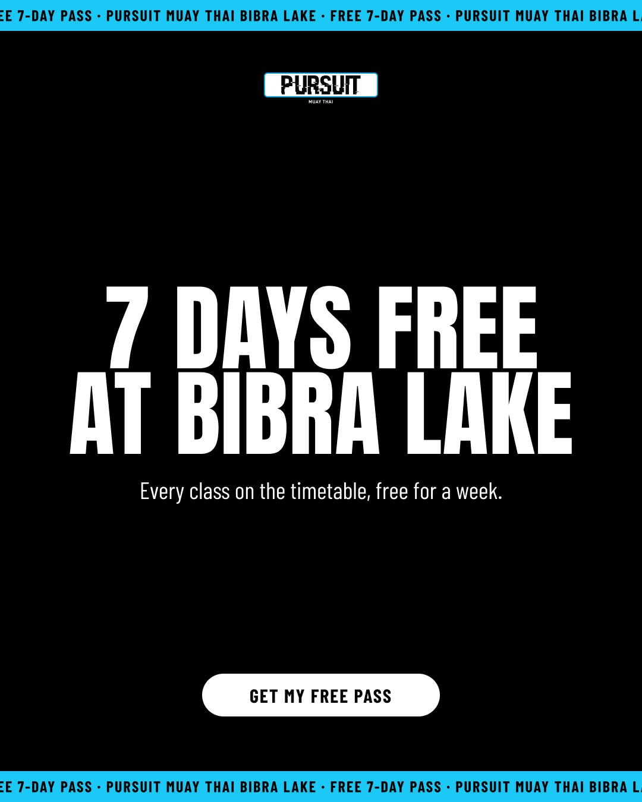

P
Pursuit Muay Thai AustraliaSponsored
Ready to give Muay Thai a go, Bibra Lake? 🥊
Pursuit Muay Thai, Australia's fastest growing Muay Thai gyms, has a free 7-day pass with your name on it. Jump into as many classes as you like at our Bibra Lake club.
Whether you're brand new and want to get fit, or you've trained for years and want to sharpen your technique, we've got you covered: 🥊 Foundations for beginners 🥇 Intermediate to advanced 👧 Kids classes, ages 4 and up
Claiming your pass is easy. Hit the button below and we'll send it via email or SMS. 📧
